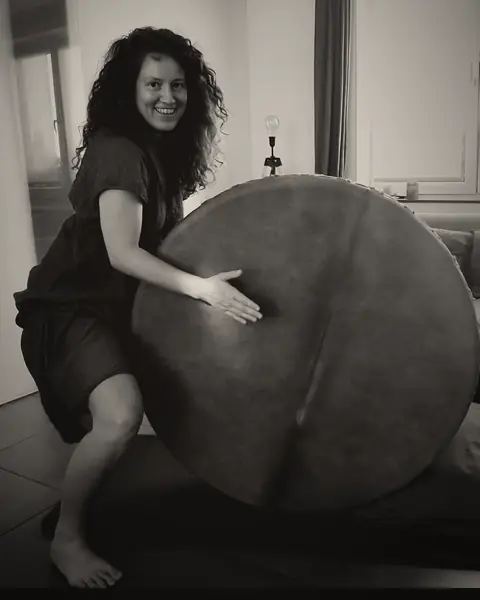

Experiment 01 · zonder zicht
Wat gebeurt er als ik je zicht wegneem?
Ik neem je geblinddoekt mee de natuur in, in Nismes. Je stapt, je danst, je luistert. Alleen of in groep.
Alles gaat via je ogen
In een wereld waar beelden de hele dag je aandacht opeisen, nodig ik je uit voor een levende ervaring.
Ik neem je zicht weg. De rest wordt wakker: de grond onder je voeten, de wind op je huid, de stem van de ander, je adem.
Minder kijken. Meer voelen.
Erika Wild organiseert zintuiglijke experimenten met een blinddoek, in de natuur, in Nismes (Viroinval, provincie Namen). Individuele sessie: € 75 (1 uur). Groepssessie: € 35 per persoon (2 uur, maximaal 8 personen).
Experiment 01
Zonder zicht
Ik neem weg wat overheerst: je blik. Wat kan er dan ontstaan? Eén vraag tegelijk, daarna volgt het volgende experiment.
- Wandelen in de natuur
Geblinddoekt en begeleid. Het terrein, de geuren, de geluiden.
- Dansen
Zonder spiegel, zonder blik. Gewoon wat je lijf wil.
- Muziek en ritme
Luisteren, slaan, zingen. Het ritme houdt de groep samen.
- Expressie en impressie
Wat via je zintuigen binnenkomt, komt eruit via gebaar, stem en lijn.


In Nismes komen drie landschappen samen: de Fagne, de Calestienne en de Ardennen. Weide, kalkrots, bos: drie soorten grond onder je voeten.

Ik ben Erika
Het bos, dans, ritme en mezelf het zicht ontnemen: dat bracht mijn hoofd eindelijk tot stilstand. Mijn lijf en mijn intuïtie kregen het woord.
In resonantie met de natuur en de mensen maak ik ervaringen die raken. Ik ben opgeleid in toegepaste ecopsychologie en ademcoaching.

Wie het al beleefde
…she made me feel safe to give myself fully to the darkness and the connection with the Earth.
En jouant et en riant, en utilisant tous les sens, on se connecte à la nature et à la terre (littéralement aussi).
Un accueil chaleureux, une activité où le respect de chacun est primordial, chacun vient comme il est…
Ze geeft zoveel energie van haar zelf in haar sessies wat heel ontwapenend werkt. […] Je hoeft niks te doen, gewoon te zijn.
Na eerdere ateliers.
Hoe het gaat
- Je hoeft niet te kunnen dansen of musiceren.
- De blinddoek gaat af wanneer jij dat wil.
- Ik begeleid je. Je staat nooit alleen in het donker.
En als het regent?
Slecht weer bestaat niet, alleen slechte kleren. We gaan bij elk weer naar buiten. Bij onweer zoeken we een plek binnen op.
Wat trek ik aan?
Kleren die vuil mogen worden en stevige schoenen. We stappen, zitten op de grond en voelen soms aan de aarde.
Waar precies?
Op de parking van de Fondry des Chiens, in Nismes (Viroinval).
En als ik moet annuleren?
Annuleren kan tot 48 uur voor de sessie.